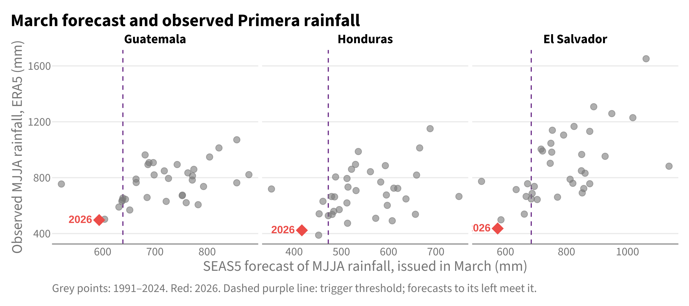
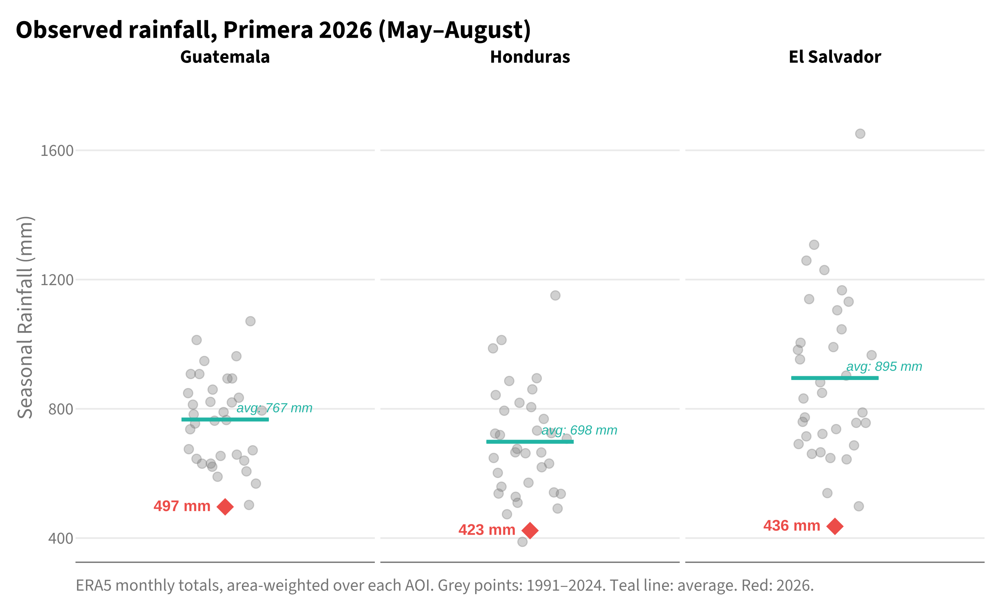
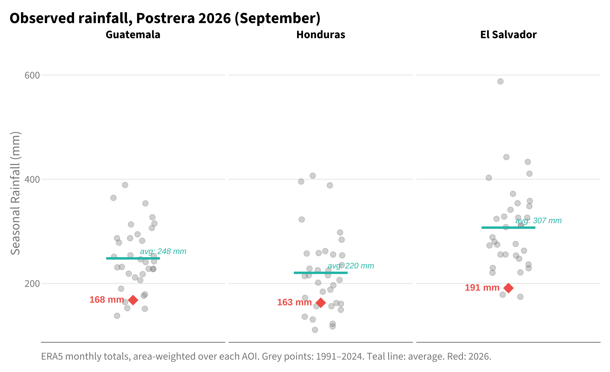
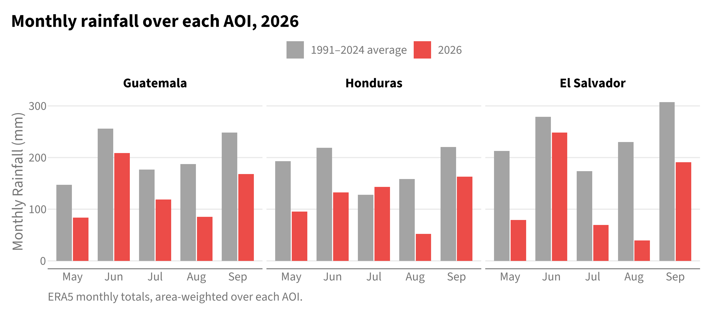
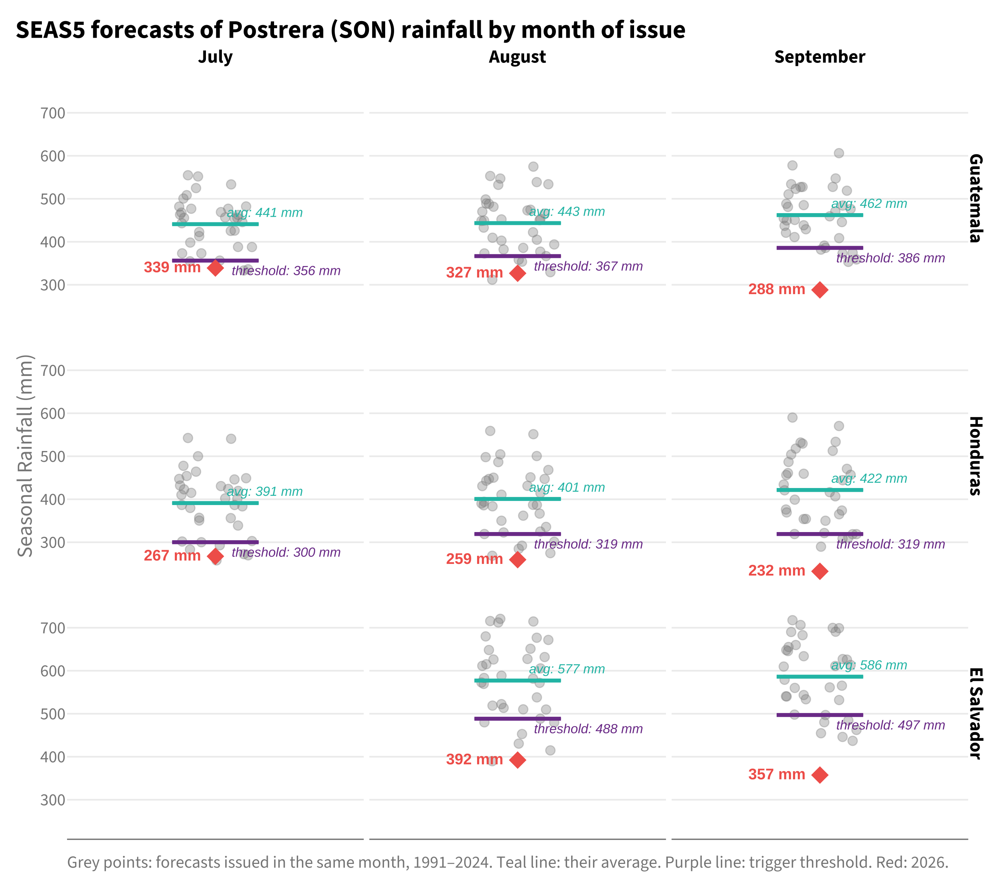
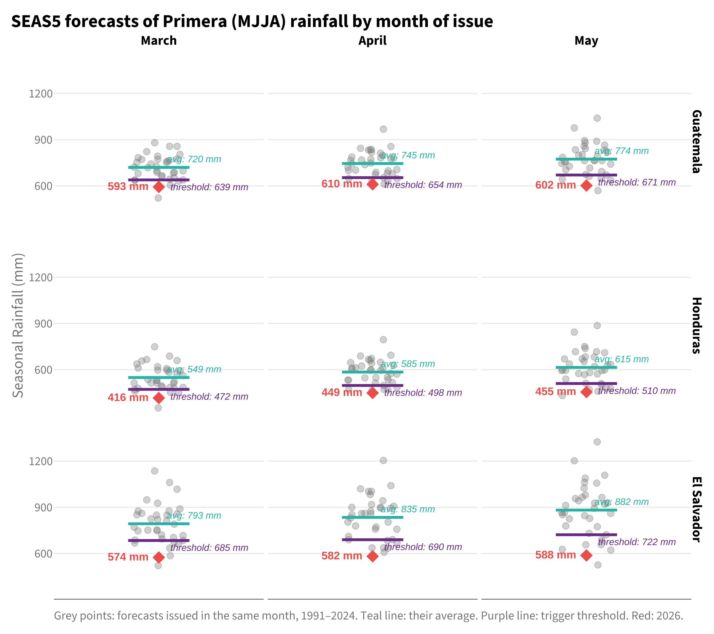
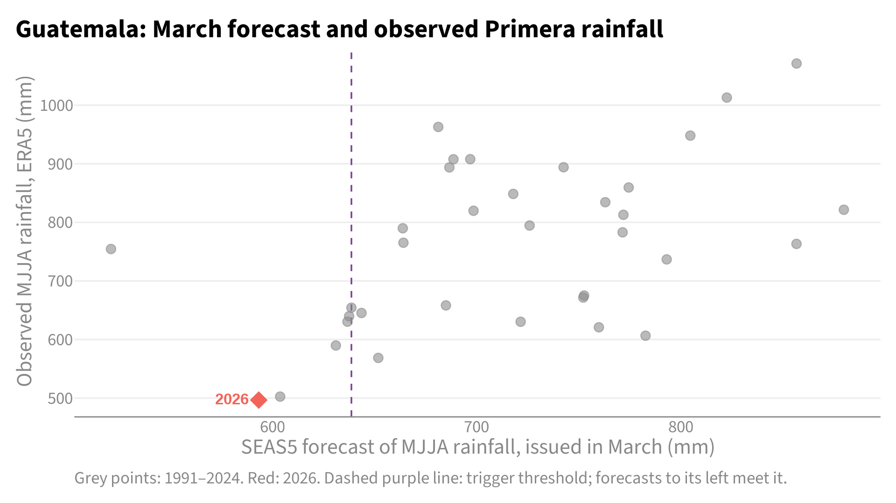
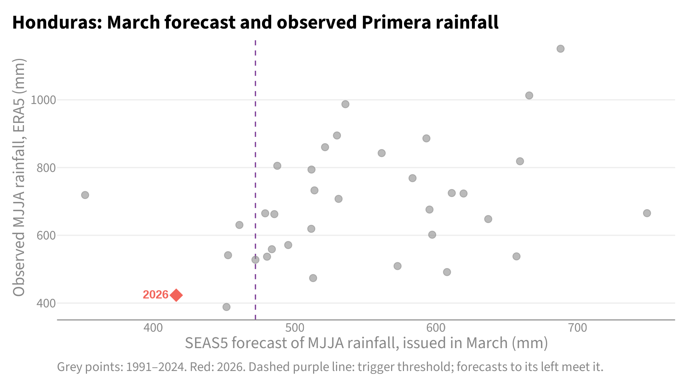
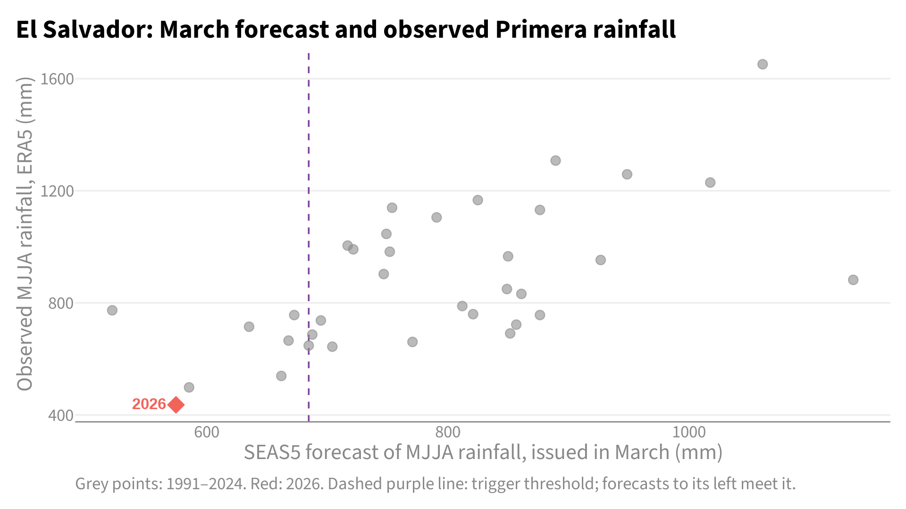

| Country | Forecast at activation (mm) | Threshold (mm) | Forecast vs average | Forecast return period | Observed months | Observed (mm) | Observed vs average | Observed rank | Observed return period |
|---|---|---|---|---|---|---|---|---|---|
| Guatemala | 593 | 639 | 18% below | 1 in 18.0 | May–August | 497 | 35% below | driest of 35 | 1 in 36 or rarer |
| Honduras | 416 | 472 | 24% below | 1 in 18.0 | May–August | 423 | 39% below | 2nd driest of 35 | 1 in 18.0 |
| El Salvador | 574 | 685 | 28% below | 1 in 18.0 | May–August | 436 | 51% below | driest of 35 | 1 in 36 or rarer |
11 2026 Season Review
11.1 Intro
The anticipatory action framework for drought in the Central American Dry Corridor (CADC) covers Guatemala, Honduras and El Salvador in 2026. It was developed by the regional and national partners with the Centre for Humanitarian Data (CHD) and combines pre-agreed financing, pre-selected interventions and a trigger based on the ECMWF SEAS5 seasonal rainfall forecast. Two seasons are monitored: Primera (May–August, MJJA) and Postrera (September–November, SON).
The framework was activated in all three countries in March 2026: the SEAS5 forecast of Primera rainfall published on 5 March met the threshold in Guatemala, Honduras and El Salvador. A country’s funds are released once, by whichever monitoring moment meets its threshold first, so the forecasts after March are reported here for information only.
This review does for all three countries what the 2025 review did after the Guatemala activation. It compares the rainfall that was observed over each area of interest (AOI) with the historical record and with the forecast that activated the framework, and it compiles the forecasts as they stood at each monitoring moment. Observed rainfall is from ERA5 and is available through September 2026. The July situation summary (Chapter 10) covers the same season halfway through, for every admin-1 unit and with agricultural stress; this chapter follows it to the end for the framework’s areas.
| Country | Area of interest for the trigger |
|---|---|
| Guatemala | Chiquimula, Jalapa, El Progreso, Zacapa (area-weighted) |
| Honduras | El Paraíso, Francisco Morazán (area-weighted) |
| El Salvador | National average (activities target Ahuachapán and Santa Ana) |
11.2 Key points
- Guatemala: observed Primera rainfall was 497 mm, 35% below the 1991–2024 average. That is the driest of 35 years (return period 1 in 36 or rarer). The March forecast that activated the framework was 593 mm against a threshold of 639 mm (return period 1 in 18.0 among March forecasts).
- Honduras: observed Primera rainfall was 423 mm, 39% below the 1991–2024 average. That is the 2nd driest of 35 years (return period 1 in 18.0). The March forecast that activated the framework was 416 mm against a threshold of 472 mm (return period 1 in 18.0 among March forecasts).
- El Salvador: observed Primera rainfall was 436 mm, 51% below the 1991–2024 average. That is the driest of 35 years (return period 1 in 36 or rarer). The March forecast that activated the framework was 574 mm against a threshold of 685 mm (return period 1 in 18.0 among March forecasts).
In every country the Primera was at least as dry as the March forecast indicated. It was rarer than forecast in Guatemala and El Salvador, and as rare as forecast in Honduras (return periods of the forecast and of the observed season: 1 in 18 and 1 in 36 or rarer in Guatemala; 1 in 18 and 1 in 18 in Honduras; 1 in 18 and 1 in 36 or rarer in El Salvador).
11.3 Forecast at activation and the season that followed
Forecast and observed totals are not compared in millimetres, because SEAS5 and ERA5 have different climatologies. Each is placed in its own record instead: the forecast among forecasts issued in the same month of 1991–2024, the observed total among observed seasons of 1991–2024. The return periods are empirical, and with 35 years they cannot distinguish anything rarer than 1 in 36.

11.4 Observed rainfall
| Season | Months | Country | Observed (mm) | Average (mm) | vs average | Rank | Return period |
|---|---|---|---|---|---|---|---|
| Primera | May–August | Guatemala | 497 | 767 | 35% below | driest of 35 | 1 in 36 or rarer |
| Primera | May–August | Honduras | 423 | 698 | 39% below | 2nd driest of 35 | 1 in 18.0 |
| Primera | May–August | El Salvador | 436 | 895 | 51% below | driest of 35 | 1 in 36 or rarer |
| Postrera | September (season to date) | Guatemala | 168 | 248 | 32% below | 5th driest of 35 | 1 in 7.2 |
| Postrera | September (season to date) | Honduras | 163 | 220 | 26% below | 11th driest of 35 | 1 in 3.3 |
| Postrera | September (season to date) | El Salvador | 191 | 307 | 38% below | 3rd driest of 35 | 1 in 12.0 |
A season still in progress is compared like for like: the months observed so far against the same months in every other year.



11.4.1 Observational zoom-in
The trigger areas are averages. The table below gives the same statistics for the individual departments: those that make up the Guatemala and Honduras AOIs, and the two departments targeted in El Salvador, where the trigger itself uses the national average.
| Season | Months | Country | Department | Observed (mm) | vs average | Rank | Return period |
|---|---|---|---|---|---|---|---|
| Primera | May–August | Guatemala | Chiquimula | 549 | 34% below | 2nd driest of 35 | 1 in 18.0 |
| Primera | May–August | Guatemala | El Progreso | 360 | 44% below | driest of 35 | 1 in 36 or rarer |
| Primera | May–August | Guatemala | Jalapa | 346 | 49% below | driest of 35 | 1 in 36 or rarer |
| Primera | May–August | Guatemala | Zacapa | 661 | 23% below | 3rd driest of 35 | 1 in 12.0 |
| Primera | May–August | Honduras | El Paraiso | 446 | 32% below | 3rd driest of 35 | 1 in 12.0 |
| Primera | May–August | Honduras | Francisco Morazan | 404 | 45% below | 2nd driest of 35 | 1 in 18.0 |
| Primera | May–August | El Salvador | Ahuachapán | 454 | 55% below | driest of 35 | 1 in 36 or rarer |
| Primera | May–August | El Salvador | Santa Ana | 298 | 52% below | driest of 35 | 1 in 36 or rarer |
| Postrera | September (season to date) | Guatemala | Chiquimula | 171 | 39% below | 3rd driest of 35 | 1 in 12.0 |
| Postrera | September (season to date) | Guatemala | El Progreso | 158 | 28% below | 7th driest of 35 | 1 in 5.1 |
| Postrera | September (season to date) | Guatemala | Jalapa | 145 | 35% below | 3rd driest of 35 | 1 in 12.0 |
| Postrera | September (season to date) | Guatemala | Zacapa | 190 | 26% below | 7th driest of 35 | 1 in 5.1 |
| Postrera | September (season to date) | Honduras | El Paraiso | 159 | 16% below | 14th driest of 35 | 1 in 2.6 |
| Postrera | September (season to date) | Honduras | Francisco Morazan | 166 | 33% below | 8th driest of 35 | 1 in 4.5 |
| Postrera | September (season to date) | El Salvador | Ahuachapán | 235 | 35% below | 3rd driest of 35 | 1 in 12.0 |
| Postrera | September (season to date) | El Salvador | Santa Ana | 145 | 37% below | 3rd driest of 35 | 1 in 12.0 |
11.5 Forecasts
The forecasts are compiled below in reverse chronological order, as they stood at each monitoring moment. All three countries activated at the March moment. A threshold met at a later moment had no further operational consequence and is shown to see whether later forecasts agreed with the one that activated the framework.
| Season | Issued | Country | Forecast (mm) | Threshold (mm) | Status | vs average | Return period |
|---|---|---|---|---|---|---|---|
| Postrera | September 2026 | Guatemala | 288 | 386 | Threshold met | 38% below | 1 in 36 or rarer |
| Postrera | September 2026 | Honduras | 232 | 319 | Threshold met | 45% below | 1 in 36 or rarer |
| Postrera | September 2026 | El Salvador | 357 | 497 | Threshold met | 39% below | 1 in 36 or rarer |
| Postrera | August 2026 | Guatemala | 327 | 367 | Threshold met | 26% below | 1 in 18.0 |
| Postrera | August 2026 | Honduras | 259 | 319 | Threshold met | 35% below | 1 in 36 or rarer |
| Postrera | August 2026 | El Salvador | 392 | 488 | Threshold met | 32% below | 1 in 18.0 |
| Postrera | July 2026 | Guatemala | 339 | 356 | Threshold met | 23% below | 1 in 12.0 |
| Postrera | July 2026 | Honduras | 267 | 300 | Threshold met | 32% below | 1 in 18.0 |
| Primera | May 2026 | Guatemala | 602 | 671 | Threshold met | 22% below | 1 in 18.0 |
| Primera | May 2026 | Honduras | 455 | 510 | Threshold met | 26% below | 1 in 18.0 |
| Primera | May 2026 | El Salvador | 588 | 722 | Threshold met | 33% below | 1 in 18.0 |
| Primera | April 2026 | Guatemala | 610 | 654 | Threshold met | 18% below | 1 in 36 or rarer |
| Primera | April 2026 | Honduras | 449 | 498 | Threshold met | 23% below | 1 in 36 or rarer |
| Primera | April 2026 | El Salvador | 582 | 690 | Threshold met | 30% below | 1 in 36 or rarer |
| Primera | March 2026 | Guatemala | 593 | 639 | Threshold met | 18% below | 1 in 18.0 |
| Primera | March 2026 | Honduras | 416 | 472 | Threshold met | 24% below | 1 in 18.0 |
| Primera | March 2026 | El Salvador | 574 | 685 | Threshold met | 28% below | 1 in 18.0 |
11.5.1 Postrera

11.5.2 Primera

11.6 Method notes
- Observed rainfall: ERA5 monthly precipitation from the team database, area-weighted across the departments of each AOI in the same way as the forecast. ERA5 is a reanalysis and is the only observational source used so far; see the open points.
- Forecasts: SEAS5 seasonal totals aggregated as in the 2026 monitoring (
src/monitoring_2026/update_activation_status.R) and compared with the same thresholds. A threshold is met when the forecast is at or below it. The values are recomputed from the database as it stands now. They are not the figures emailed on the day. - Baseline: 1991–2024 for both, the period the 2026 thresholds were calibrated on.
- Return periods: rank of 2026 among the 34 baseline years plus itself, Weibull plotting position, (n + 1) / rank. They describe how unusual the value is in its own record. They are not the return period of the trigger, which combines several monitoring moments.
11.7 Open points
- Cross-check the observed totals against a second source (CHIRPS). The 2024 review showed both, and ERA5 alone is a thin basis for a severity statement.
- Postrera: redo the observed section once ERA5 covers November (early December).
- Add evidence of impact (FAO ASI, as in the July situation summary in Chapter 10, and reported impacts). Rainfall shows whether the hazard occurred, and says nothing about whether the impact followed.
- Write the narrative for the two questions left open on the 2025 review, using the first table (did the trigger capture the right severity level) and the forecast table (how later forecasts and the season compared with the moment of activation).
11.8 Slide figures
One figure per country at 16:9 (1920 × 1080 px, also saved in output/png/ next to this chapter), each with a short summary in English and Spanish for presentations. The summaries use only the return periods: the March forecast among March forecasts, and the observed season among observed seasons, as in the first table.
11.8.1 Guatemala

English
Guatemala: a rare forecast, followed by a rarer drought
Forecast: 1 in 18. Observed: 1 in 36 or rarer.
In March, the seasonal forecast for the Primera season (May–August) showed a 1-in-18-year dry signal: the second-driest March forecast in 35 years. It activated the framework before the season began. The observed rainfall made the season the driest Primera in 35 years, a 1-in-36-year event or rarer. The forecast picked up a rare drought, and the outcome was rarer still.
Español
Guatemala: un pronóstico excepcional, seguido de una sequía aún más excepcional
Pronóstico: 1 en 18 años. Observado: 1 en 36 años o más raro.
En marzo, el pronóstico estacional para la Primera (mayo–agosto) mostró una señal de sequía con un período de retorno de 1 en 18 años: el segundo pronóstico de marzo más seco en 35 años. Activó el marco antes de que comenzara la temporada. Con la lluvia observada, la temporada resultó ser la Primera más seca en 35 años, un evento de 1 en 36 años o más raro. El pronóstico detectó una sequía excepcional, y lo que ocurrió fue más extremo aún.
11.8.2 Honduras

English
Honduras: a rare forecast, and a season just as rare
Forecast: 1 in 18. Observed: 1 in 18.
In March, the seasonal forecast for the Primera season (May–August) showed a 1-in-18-year dry signal: the second-driest March forecast in 35 years. It activated the framework before the season began. The observed rainfall made the season the second-driest Primera in 35 years, a 1-in-18-year event. The season turned out as rare as the forecast signalled.
Español
Honduras: un pronóstico excepcional, y una temporada igual de excepcional
Pronóstico: 1 en 18 años. Observado: 1 en 18 años.
En marzo, el pronóstico estacional para la Primera (mayo–agosto) mostró una señal de sequía con un período de retorno de 1 en 18 años: el segundo pronóstico de marzo más seco en 35 años. Activó el marco antes de que comenzara la temporada. Con la lluvia observada, la temporada resultó ser la segunda Primera más seca en 35 años, un evento de 1 en 18 años. La temporada fue tan excepcional como anticipaba el pronóstico.
11.8.3 El Salvador

English
El Salvador: a rare forecast, followed by a rarer drought
Forecast: 1 in 18. Observed: 1 in 36 or rarer.
In March, the seasonal forecast for the Primera season (May–August) showed a 1-in-18-year dry signal: the second-driest March forecast in 35 years. It activated the framework before the season began. The observed rainfall made the season the driest Primera in 35 years, a 1-in-36-year event or rarer. The forecast picked up a rare drought, and the outcome was rarer still.
Español
El Salvador: un pronóstico excepcional, seguido de una sequía aún más excepcional
Pronóstico: 1 en 18 años. Observado: 1 en 36 años o más raro.
En marzo, el pronóstico estacional para la Primera (mayo–agosto) mostró una señal de sequía con un período de retorno de 1 en 18 años: el segundo pronóstico de marzo más seco en 35 años. Activó el marco antes de que comenzara la temporada. Con la lluvia observada, la temporada resultó ser la Primera más seca en 35 años, un evento de 1 en 36 años o más raro. El pronóstico detectó una sequía excepcional, y lo que ocurrió fue más extremo aún.
Contact the OCHA Centre for Humanitarian Data via Zachary Arno, Data Scientist, at zachary.arno@un.org with any questions or feedback.